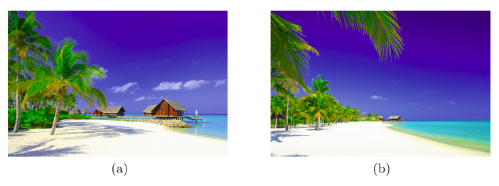
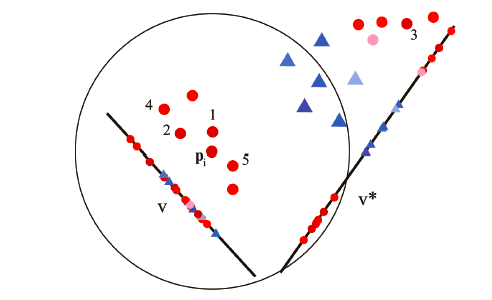
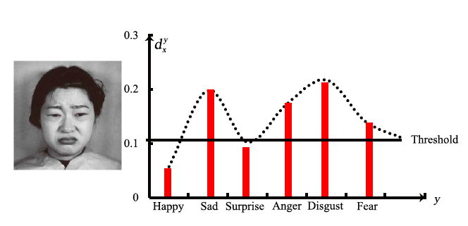

|
About Me
I am a first year Ph.D. student in i-VisionGroup of the Department of Automation at Tsinghua University, advised by Prof. Jie Zhou and Prof. Jiwen Lu. Before that, I received my B.E. degree in Information Engineering, Southeast University.
My research interests lie in unsupervised learning, computer vision and 3D.
Publications
|  |
|  |
|  |
Education

|
Ph.D. in Pattern Recognition and Machine Learning, Tsinghua University, China.
2019.8 - Present |

|
B.Eng. in Information Engineering, Southeast University, China.
2015.8 - 2019.6 |
Honors
- Outstanding Graduate of Southeast University, 2019
- Merit Student of Southeast University, 2016, 2017 & 2018
- President Scholarship of Southeast University, 2016
- Mayor's Award of Beijing in Technical Innovation, 2015
- First Prize in the Awarding Program for Future Scientists, 2014
Contact
|
Email: ta19@mails.tsinghua.edu.cn
Address: Room 624, Central Main building, Tsinghua University, Beijing
|